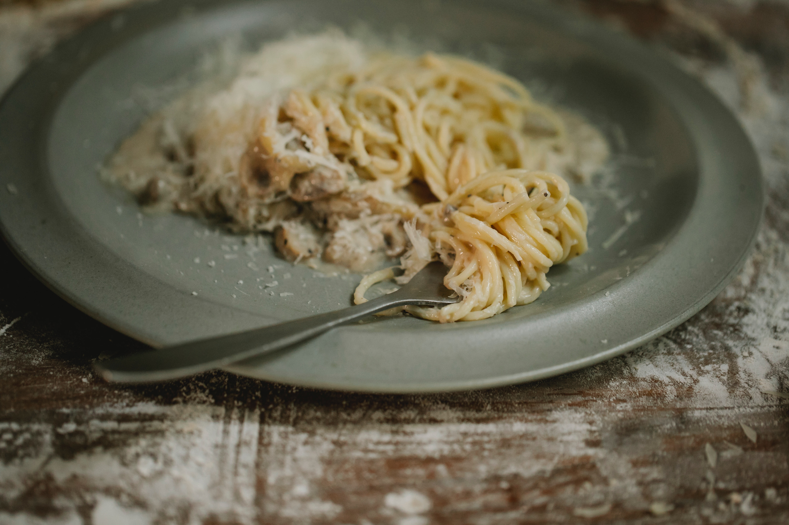

Creamy Pasta

ONE POT GARLIC PARMESAN PASTA
The easiest and creamiest pasta made in a single pot – even the pasta gets cooked right in the pan! How easy is that?
Ingredients
- 2 tablespoons unsalted butter
- 4 cloves garlic, minced
- 2 cups chicken broth
- 1 cup milk, or more, as needed
- 8 ounces uncooked fettuccine
- Kosher salt and freshly ground black pepper, to taste
- 1/4 cup freshly grated Parmesan
- 2 tablespoons chopped fresh parsley leaves
Instructions
- Melt butter in a large skillet over medium high heat. Add garlic and cook, stirring frequently, until fragrant,
about
1-2 minutes.
- Stir in chicken broth, milk and fettuccine; season with salt and pepper, to taste.
- Bring to a boil; reduce heat and simmer, stirring occasionally, until pasta is cooked through, about 18-20
minutes. Stir
in Parmesan. If the mixture is too thick, add more milk as needed until desired consistency is reached.
- Serve immediately, garnished with parsley, if desired.